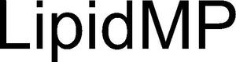

Trade Mark Journal No.2025/040 3 October 2025
WO0000001876485 (1,5,9)
Office of origin: Germany
Date of International Registration:21 March 2025
Date of designation in the UK:
21 March 2025

International priority date claimed: 23 September 2024
(Germany)
- Class 1
- Chemical substances for analyses in laboratories, other than for medical or veterinary purposes; chemical products for adsorbing; cross linking agents; absorption agents; chemical compositions for scientific use in the preparation of culture media; adsorbent chemical preparations; chemical substances for analyses in laboratories, other than for medical or veterinary purposes; liquid buffers; hydrogel polymer coatings; chromatography chemicals; polymer beads for use in manufacturing; reagents in kit form for conducting enzyme-linked immunosorbent assays (elisa) [other than for medical or veterinary purposes]; biomolecule labelling kits comprising reagents for use in scientific research; chemicals for use in scientific analysis [other than medical or veterinary]; reagents for use in scientific apparatus for chemical or biological analysis; polymers for use in the analysis of proteins; chemicals for use in analysis [other than medical and veterinary]; reagents for use with evacuated ampoules in fluid analysis [other than for medical or veterinary purposes].
- Class 5
- Reagents for use with analyzers [for medical purposes]; reagents for use in analysis [for medical purposes]; reagents for use with analyzers [for veterinary purposes].
- Class 9
- Physical analysing apparatus [other than for medical use]; research laboratory analyzers for measuring, testing and analyzing blood and other bodily fluids; devices for analyzing protein sequence used as laboratory apparatus; chromatogram analyzers for scientific or laboratory use; testing apparatus not for medical purposes.
Cube Biotech GmbH
Representative: Dr. Andy Stefan Roth DR. ROTH Patentanwaltskanzlei, Plange Mühle 5, 40221 Düsseldorf, GERMANY